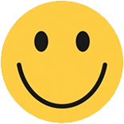
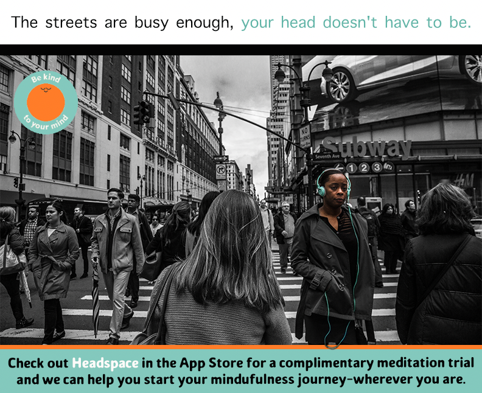
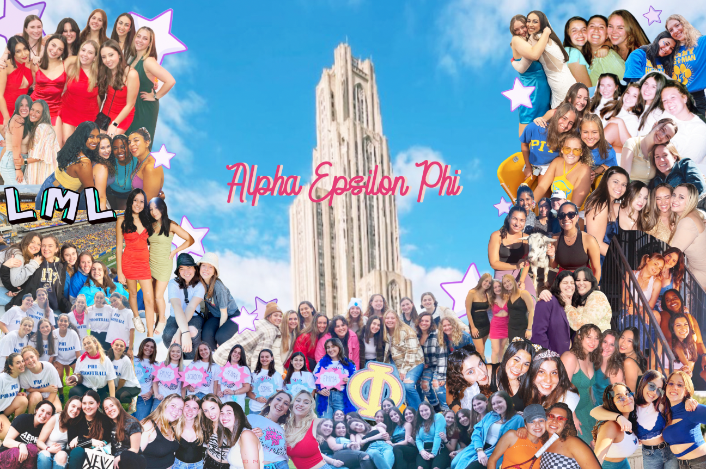
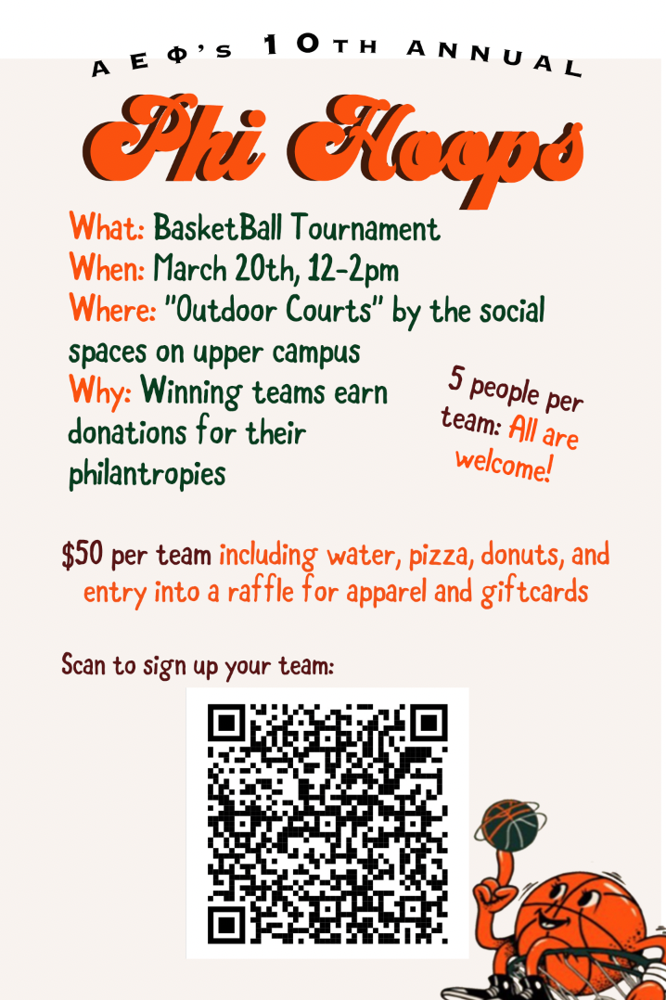

My Experience
My first Internship was with
Noshinku, which is a hand sanitzer company that began before the pandemic.
The second place I worked for was Miror, a nonprofit vitrual platform that hosts gatherings regarding people's mental health.
About Me

I am graduating from the University of Pittsburgh in May 2022 with a degree in Media and Professional Communication with a certificate in Leadership.
Creations
This project was created in 2022, for my Composing Digital Media course we were asked to create a visual argument. After many revisions and peer/advisor feedback I put together this final visual. This graphic argues that education in the prison system can break the once arrest, always arrest pipeline.
 This project was created in 2022 for my Persuastive Writing in Advertising course. The class was given a few random images and asked to create a print ad for any company. I decided to focus on the headphone sof the image and relate it to Headspace. Headspace is an online company that specializes in meditation and mental health.
This project was created in 2022 for my Persuastive Writing in Advertising course. The class was given a few random images and asked to create a print ad for any company. I decided to focus on the headphone sof the image and relate it to Headspace. Headspace is an online company that specializes in meditation and mental health.

This collage was create in 2022 for my sorority at The University of Pittsbrugh. I made this for recruitment to promote sisterhood to the potential new memebers going through recruitment.

Here is an Instagram story I made to promote a basketball tournament our chapter hosted. An event called Phi Hoops is an event we host annually to raise money for our philanthropies while having a ball!

I hope to be in touch,
Kaitlyn
P.S. Feel free to reach out with any questions or comments about my experience. Thank you for checking out my website!